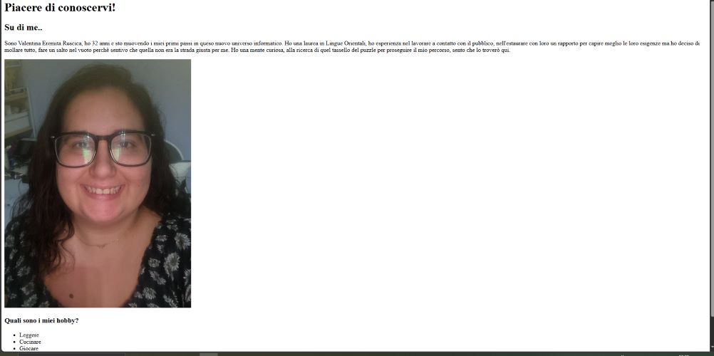
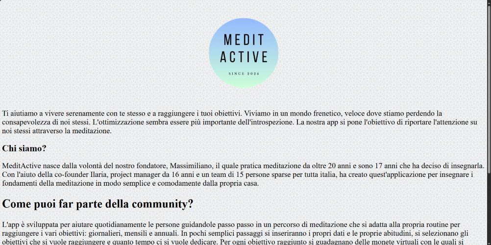
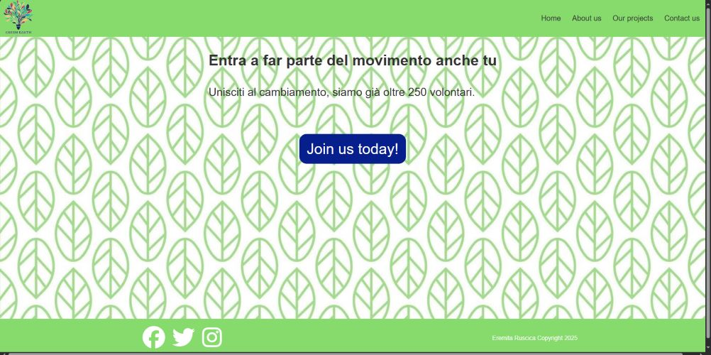

Ciao, sono
VALENTINA
EREMITA RUSCICA
Sto studiando per diventare Front-End Developer e adoro trasformare idee in esperienze digitali intuitive e coinvolgenti. Mi appassionano HTML, CSS e JavaScript, e sono sempre alla ricerca di nuove sfide per migliorare le mie competenze. Esplora i miei progetti e scopri il mio percorso nel mondo dello sviluppo web!
Attualmente sto costruendo il mio percorso nel mondo digitale attraverso il Master in Front-End Development di Start2Impact. Ho scelto di uscire dalla mia comfort zone per dedicarmi a un settore completamente diverso rispetto alle mie esperienze precedenti. È stata una sfida impegnativa, ma la voglia di mettermi in gioco ha superato ogni timore. Da sempre appassionata di puzzle ed enigmi, ho scoperto nel coding un modo per trasformare questa attitudine in soluzioni concrete e creative. Pur essendo ancora all'inizio del mio percorso, affronto ogni progetto con entusiasmo, curiosità e il desiderio di migliorarmi costantemente, sperimentando strumenti e tecnologie sempre nuove.
LE MIE SKILL
HTML
CSS
SASS
Photoshop
Autocad
ALTRO SU DI ME
Ho molti interessi e mi considero una persona ambiversa: amo alternare momenti di solitudine, in cui mi immergo nella lettura di un buon libro, risolvo un puzzle o mi rilasso con una serie TV (meglio se crime), a momenti di socialità, come una cena in compagnia, una passeggiata rigenerante o una sfida a un gioco da tavolo. Un posto speciale nel mio percorso lo occupa la cultura asiatica, in particolare quella coreana e giapponese. La mia passione per queste realtà mi ha portata a laurearmi in Lingue e Civiltà Orientali, approfondendo non solo la lingua, ma anche la storia, le tradizioni e le dinamiche culturali di questi Paesi. Amo la fotografia, soprattutto quella di paesaggi e natura, che mi permette di catturare attimi unici e scoprire il mondo da nuove prospettive. La mia curiosità mi porta sempre alla ricerca di nuove esperienze: datemi un set LEGO e mi perderò tra i mattoncini per ore, ma appena finito potrei già essere al telefono a organizzare il prossimo viaggio. Perché alla fine, per me, le possibilità sono davvero infinite.
QUALCHE MIO LAVORO
Primo progetto
Questo è stato il mio primo progetto, una semplice pagina senza css per presentarmi. E' infatti molto basica, con giusto gli elementi necessari.
Secondo progetto
Il mio secondo progetto è stata una pagina per un'app di meditazione. Qui è evidente la presenza di css, sia dal logo che dallo sfondo.
Terzo progetto
Questo progetto è un sito per una start up, la Green Earth, che si occupa di preservare le foreste e gli oceani.
Per questo progetto sono state create varie sezioni differenti.
Si può vedere sia la navbar che il footer, come anche un logo sul lato sinistra della navbar.